Goals
2013 and 2014 Biennium
Adopted
November 2012
for the
and
Outcomes
The City of
Williamsburg, Virginia
Initiatives

To advance the city’s vision, every two years the Williamsburg City Council identifies new
strategic objectives for city government. Biennial Goals, Initiatives and Outcomes (GIOs)
provide an expression of city priorities, as specific and measurable as possible, covering a
two year period. Longer term objectives are expressed in terms of what the city hopes to
accomplish in the near term toward that objective.
GIOs are not intended to be a comprehensive list of all city services and activities. Instead,
they provide a concrete, coordinated expression of City Council's direction for change and
focus. In that way, they drive city government operating budget and capital budget
formation. The 2013/2014 Biennial Goals, Initiatives and Outcomes, adopted in November
2012, guide budget decisions for two fiscal years, that is, for FY 13 and FY 14.
Under eight Goal statements 64 specific Initiatives are identified. In addition to the
Initiatives, Outcomes from the National Citizen Survey (NCS); and “Desired Outcomes” and
Observed Results,” provide performance metrics which help assess goal achievement.
Williamsburg participated in the NCS in May 2008, 2010 and 2012. Reported here are
citizen ratings of “Good” or “Excellent” for 78 questions and whether those ratings were
“above,” “below,” or “similar” to the benchmark average of hundreds of other cities and
counties across the nation (cross referenced to the page in Williamsburg’s NCS Report).
The Biennial GIOs are created in light of a variety of resources including the city's
Comprehensive Plan, Five Year Capital Improvement Program (CIP), and Economic
Development Strategic Plan; and with input from citizens, city staff, and volunteers.
Biennial goal statements align with the draft 2013 Comprehensive Plan goals. Initiative
statements with a
symbol directly link to projects in the city’s CIP.
Statements with a
symbol identify Healthy Community initiatives, as that theme
runs throughout the 2013/2014 GIOs.
Citizen engagement is vital to the success of this process from start to finish. Go to
www.williamsburgva.gov/goals anytime for status reports and to offer your comments.
Clyde Haulman, Mayor
Jackson C. Tuttle, City Man
ager
Clyde Haulman
Mayor
Paul Freiling
Vice Mayor
Judy Knudson
Council Member
Scott Foster
Council Member
Douglas Pons
Council Member
CITY OF WILLIAMSBURG VISION
Williamsburg will become an evermore safe, beautiful, livable city
of historic and academic renown, served by a city government —
cohesively led, financially strong, always improving — in full
partnership with the people who live, work and visit here.
November 8, 2012
B - 2

GOAL I: Character of the City
Protect and enhance Williamsburg’s unique character as defined by its residential neighborhoods,
urban places, open spaces, and by its iconic places—the Colonial Williamsburg Historic Area
and campus of the College of William and Mary.
Page 3
GOAL II: Economic Vitality
Increase employment opportunities, income, business success, and city revenues by supporting and
promoting the city’s economic base of heritage tourism and education, and other development
and redevelopment opportunities.
Page 9
GOAL III: Transportation
Provide an effective transportation system compatible with the future land use plan, serving
pedestrians, bicyclists and motorists, and promoting the expanded use of transit and rail.
Page 14
GOAL IV: Public Safety
Secure an ever safer community by enabling police, fire, emergency management and judicial
operations to protect and serve city residents, visitors, businesses and historical assets.
Page 18
GOAL V: Human Services and Education
Seek opportunities and implement programs that address the educational, health, social, housing,
economic and workforce training needs and expectations of city residents and workers.
Page 23
GOAL VI: Recreation and Culture
Add to the quality and availability of cultural and recreational facilities and programming,
as might be typically available only in larger communities, to meet the needs and
expectations of city residents and visitors.
Page 29
GOAL VII: Environmental Sustainability
Build an evermore sustainable and healthy city pursuing multiple strategies for conservation
and restoration, and providing essential environmental services related to drinking water,
waste water, stormwater and solid waste.
Page 34
GOAL VIII: Citizen Engagement and City Governance
Continuously improve the effectiveness of city government and its partnership with the people
who live, work, and visit here to fulfill Williamsburg’s vision for the future.
Page 39
B - 3

A. Comprehensive Plan
Adopt the 2013 update to the Comprehensive Plan by March 2013, and complete implementation of
immediate steps as recommended in the Plan by December 2013. Continue to coordinate
comprehensive planning with James City County and York County.
B. Design Review Guidelines
Evaluate the Architectural Review Board’s Design Review Guidelines and amend them as necessary,
balancing architectural standards optimally with economic reality, construction technology and
energy efficiency. Complete the Historic Building Survey update by the end of 2013.
C. Downtown Vibrancy
Extend the high quality and success of downtown into immediately adjacent areas – specifically along
Henry Street to the north and south, and along Prince George and Scotland Streets to the west – by
means of streetscape improvements (See
Goal III: Transportation
) and by means of public and
private redevelopment. Public projects include the Stryker Center (See
Goal VIII: Citizen Engagement
and Governance
), Triangle Building (See
Goal II: Economic Vitality
). Private sector projects include
Prince George Commons retail and housing, reuse of the Health Evaluation Center, and development
of surplus downtown properties owned by Colonial Williamsburg Foundation.
D. Arts District and Midtown
Pursue the vision for renewal of the Midtown area, anchored in the Arts District identity, and
committed to the long term success of the shopping center sites. Continue to add “creative
economy” businesses, services and housing supporting the William and Mary community and visitors.
Sell the city owned “Tioga” site for development by the end of the biennium.
E. Richmond Road Corridor
Maintain this prime entrance corridor the premier regional destination for restaurants, hotels and
complementary services for visitors and locals. Make progress during the biennium in build out/lease
out of High Street, redevelopment of the “Spotswood” site at Ironbound Road, and construction of
in-fill projects, such as the new “Cook-Out” Restaurant.
GOAL I
Protect and enhance Williamsburg’s unique character as defined
by its residential neighborhoods, urban places, open spaces, and
by its iconic places—the Colonial Williamsburg Historic Area and
campus of the College of William and Mary.
B - 4

F. Capitol Quarter
Follow the guidance from the Northeast Triangle Focus Group, as consolidated in the Comprehensive
Plan update, to bring new life to the “Capitol Quarter” area. Make streetscape and pedestrian
improvements (See
Goal III: Transportation
), and return the now city-owned Lord Paget hotel to the
private sector for redevelopment/reuse, by the end of the biennium. Other private sector projects
include “Second Street Boutiques” and completion of “Capitol Landing Green.”
G. Southeast Quadrant
Work with Quarterpath at Williamsburg developers Willowwood, Riverside Healthcare Association,
and other interests to build a high quality new city neighborhood with Doctors’ Hospital of
Williamsburg as the anchor. Create a pedestrian friendly commercial, retail and residential village
complimenting Williamsburg’s special character with opportunities for significant economic
development and employment growth. Pending grant funding awards and participation by James City
County, make improvements to Route 60 East and open the Country Road to pedestrians and cyclists
– all linked by the completion of Battery Boulevard (See
Goal III: Transportation
)
H. Corridor Beautification
Complete several projects during the biennium designed to beautify entrance corridors and enhance
streetscapes (see
Initiatives and Goal III: Transportation
) notably including: underground wiring on
Page Street (Route 60), improvements to Route 60 East from the York/Page/Lafayette intersection to
the city limits, and reconstruction of Prince George Street from Boundary to Armistead.
I. Open Space Preservation
Actively pursue acquisition of additional open space and land conservation both within the city limits
and in the Waller Mill Reservoir watershed. Add to the city’s permanent open space ownership
during the biennium.
J. Merrimac Trail Neighborhoods
Focus city attention (Human Services, Codes Compliance, Police, Recreation, etc.) on neighborhood
stability and improving social conditions in the Merrimac Trail apartment corridor, collaborating with
residents and property owners.
K. Neighborhood Relations and Preservation near College
Improve the quality of life in the neighborhoods surrounding William and Mary by continuing to build
effective working relationships between the city, college, students, neighbors and landlords using the
Neighborhood Relations Committee (NRC); and by regular city-college meetings and improved
communications among all parties.
B - 5

L. Citizens Committee on Community Wellness
Partner with the community to form a Citizens Committee on Community Wellness, appointed by the
Mayor, to inventory Williamsburg facilities and activities that promote healthy lifestyles, and identify
opportunities for improvements. Seek Virginia Healthy Community and/or similar designations, and
create economic opportunities for health and sports related tourism. Request the Committee's report by
fall, 2013.
B - 6

Desired Outcomes
Observed Results
1. Maintain at least
60% of the 5781 acres
within the city limits for
public, Colonial
Williamsburg, and
College land use to
preserve Williamsburg’s
unique character.
Existing Land Use
Proportions within the City
Limits
Public, W&M and CWF
currently at 60%
*Source: Williamsburg Planning
Department
2. Increase overall
residential property
values in the city by at
least 2% annually to
maintain quality and
character of
neighborhoods.
Residential Property
Assessed Values
Average annual increase
over five years near level.
*Source: Williamsburg City
Assessor
3. Increase overall
commercial property
values in the city by at
least 2% annually to
maintain the quality
and character of
commercial corridors.
Commercial Property
Assessed Values
Average annual increase
over five years near level.
*Source: Williamsburg City
Assessor
4. Rehabilitate or build
new structures to
refresh Williamsburg’s
built environment as
indicated by at least
$50 million in new
construction annually.
Value of Building Permits
Issued
*Source: Williamsburg Code
Compliance Division
$1.14
$1.19
$1.20
$1.16
$1.13
$1.0
$1.1
$1.2
FY 08
FY 09
FY 10
FY 11
FY 12
Billions
CWF
OWNED,
1,375
PUBLICLY
OWNED,
976
COLLEGE
OWNED,
1,119
PRIVATELY
OWNED,
2,311
$0.7
$0.7
$0.7
$0.7
$0.6
$0.0
$0.2
$0.4
$0.6
$0.8
$1.0
$1.2
FY 08
FY 09
FY 10
FY 11
FY 12
Billions
B - 7

Desired Outcomes
Observed Results
5. Reduce to five (of 31
total) number of single
family zoned
neighborhoods with
more than 50% rental
use to preserve quality
and character of
neighborhoods.
Number of Neighborhoods
Exceeding 50% Rentals
Capitol Heights 61%
Cary/Griffin/Newport 62%
Colonial Extension 72%
Matoaka Court 72%
Pinecrest 54%
Powhatan Park 82%
W. Williamsburg 87%
W. Williamsburg Hts. 68%
*Source: Williamsburg Planning
Department
6. Achieve “Good” or
“Excellent” ratings on
the National Citizens
Survey for questions
related to “Character of
the City” standing
“Much Above” the
Williamsburg NCS ratings
concerning “Character of
the City” compared to the
other cities and counties
*Source: National Citizens
Survey
6
5
8
0
3
6
9
12
FY2010
FY2011
FY2012
MUCH ABOVE, 8
ABOVE, 3
SIMILAR, 3
B - 8

National Citizen Survey Results
Percent Rated
Compared to
“Good”
2012 National
or “Excellent”
Benchmark
Question (NCS page number)
2008 2010 2012
Overall Quality of Life in Williamsburg (p.7)
78% 87% 87%
much above
Williamsburg as a place to live (p.7)
85% 88% 92%
much above
Your neighborhood as a place to live (p.7)
76% 81% 78%
similar
Recommend living in Williamsburg to
someone who asks (p.7)
80% 84% 90%
above
Overall quality of new development in
56% 60% 65%
above
Williamsburg (p.17)
Overall appearance of Williamsburg (p.17)
88% 91% 92%
much above
Cleanliness of Williamsburg (p.29)
91% 92% 91%
much above
Quality of overall natural environment (p.29)
76% 84% 87%
much above
Preservation of natural areas (p.29)
58% 60% 66%
much above
Sense of Community (p.38)
64% 66% 71% above
Openness and acceptance of the
Community towards people of diverse
backgrounds (p.38)
51% 55% 61% similar
Williamsburg as a place to
raise children (p.38)
76% 88% 85%
much above
Williamsburg as a place to retire (p.38)
87% 89% 88%
much above
B - 9

A. Economic Development Strategic Plan
Adopt the Economic Development Strategic Plan by January 2013 and implement during the
biennium.
Implement new or revise existing EDA programs to encourage and facilitate redevelopment and
economic diversification. These programs may include adopting redevelopment tax benefits allowed
in the State Code, enabling financing programs, establishing a “deal closing” fund, updating the Shop
and Dine map, and finding other new ways to support and encourage new and existing businesses.
B. Economic Diversification Strategies
Finalize regional incubator details and consider regional revenue sharing as an element of by July
2013.
Analyze participation in regional entrepreneurship efforts - including economic gardening, access to
regional incubation networks, venture capital strategies, and the William and Mary Mason School of
Business - during the biennium.
Work with Riverside Healthcare Association to recruit compatible and regional professional service
businesses to Class A office space at "Quarterpath at Williamsburg," offering a "hub" location for
eastern Virginia - Richmond to Hampton Roads.
Work with Arts District owners and businesses to designate and market (e.g. banners, Shop and Dine
map, events) the Arts District to customers and prospective businesses by March 2013.
C. Targeted Redevelopment Opportunities
Work as a partner with the private sector to identify and redevelop transitional properties, including
City owned property at 906 Richmond Road (Tioga site) and 901 Capital Landing Road (Lord Paget
site) during the biennium.
Identify and purchase properties for redevelopment where the City's ownership can spur private
investment.
GOAL II
Increase employment opportunities, income, business success,
and city revenues by supporting and promoting the city’s
economic base of heritage tourism and education, and other
development and redevelopment opportunities.
Page 9
B - 10

D. Foreign Student/Short Term Worker Orientation
Design a manageable and repeatable program to orient and connect foreign students and short term
workers to the Williamsburg community in partnership with the Tourism Alliance and the College of
William and Mary.
E. Destination Tourism Promotion
Engage the Greater Williamsburg Chamber and Tourism Alliance’s transition to the region’s complete
destination marketing organization by 2014. Support the Alliance’s promotion of September as Arts
Month, including increasing the number of quality arts events; and promotion of other visitor draws,
such as, the holiday season, spring garden tours, and athletic competitions; all in addition to
promoting the traditional summer family vacation. Regularly assess progress against outcome
measures of economic success.
Page 10
B - 11
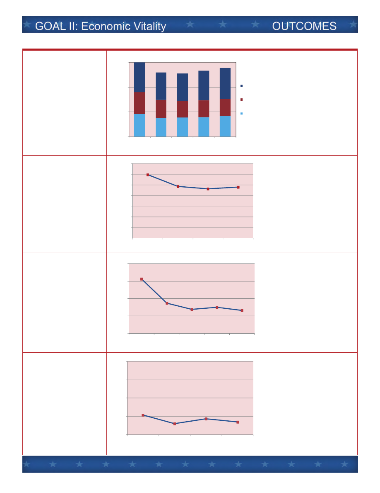
Desired Outcomes
Observed Results
1. Increase city
revenues from retail
and hospitality tax
sources by at least 2%
annually.
Tax Receipts From Meal,
Room and Sales Taxes
Average
annual decrease
over
five years: ‐1.8%
*Source:
Williamsburg Financial
Department
2. Increase the amount
of retail sales in the city
rela ve to city
popula on per year.
Per Capita Retail Sales in
the city
Average
annual decrease
over
five years: ‐6.7%
*Source:
Virginia Department of
Taxa on
3. Return to a pa ern
of increasing room
nights sold in the city
by at least 3% per year.
Hotel/Motel Room Nights
Sold
Average
annual decrease
over
five years: ‐5.8%
*Source:
Williamsburg Finance
Department
4. Increase Colonial
Williamsburg
Founda on’s cket
sales annually by at
least 3%.
Colonial Williamsburg
Founda on Ticket Sales
Average
annual decrease
over
five years: ‐1.7
*Source:
Colonial Williamsburg
Founda on
$4.6
$3.8
$3.9
$4.0
$4.2
$4.4
$3.6
$3.2
$3.4
$3.4
$6.0
$5.5
$5.6
$6.0
$6.3
$0
$5
$10
$15
FY
2008
FY
2009
FY
2010
FY
2011
FY
2012
$
Millions
Meal
Taxes
Room
Taxes
Sales
Taxes
$29,839
$24,364
$23,150
$23,894
$0
$5,000
$10,000
$15,000
$20,000
$25,000
$30,000
$35,000
FY
2008
FY
2009
FY
2010
FY
2011
813
674
639
650
632
500
600
700
800
900
FY
2008
FY
2009
FY
2010
FY
2011
FY
2012
Thousands
707
660
686
670
600
700
800
900
1,000
FY
2008
FY
2009
FY
2010
FY
2011
Thousands
Page 11
B - 12

Desired Outcomes
Observed Results
5. Increase total
number of businesses
opera ng in the city.
Business Licenses Issued
by the City
Average
annual increase
over
five years: .5%
*Source:
Williamsburg
Commissioner
of Revenue
6. Increase the
household income of
city residents by at
least 3% annually.
Medium Household
Income of City Residents
Average
annual increase
over
ten years: 3.2%
*Source:
US Department of
Commerce,
Bureau of Economic
Analysis
(Wmsbg, JCC combined)
7. Increase
employment
opportuni es with
growth of in‐city jobs
from year to year.
Number of Jobs Based in
the City
Average
annual decrease
2010
to 2010: ‐1.6%
*Source:
Virginia Employment
Commission
8. Achieve “Good” or
“Excellent” ra ngs on
the Na onal Ci zens
Survey for ques ons
related to “Economic
Vitality” standing
“Much Above” the
na onal benchmark.
Number of Williamsburg
NCS ra ngs concerning
“Economic Vitality”
compared to the other
ci es and coun es.
*Source:
Na onal Ci zens
Survey
MUCH ABOVE, 2
ABOVE, 2
SIMILAR, 1
779
783
783
790
796
600
700
800
900
FY
2008
FY
2009
FY
2010
FY
2011
FY
2012
$37,093
$50,794
$0
$10,000
$20,000
$30,000
$40,000
$50,000
$60,000
2000
2010
12,843
19,517
23,397
20,009
0
5,000
10,000
15,000
20,000
25,000
1980
1990
2000
2010
Page 12
B - 13
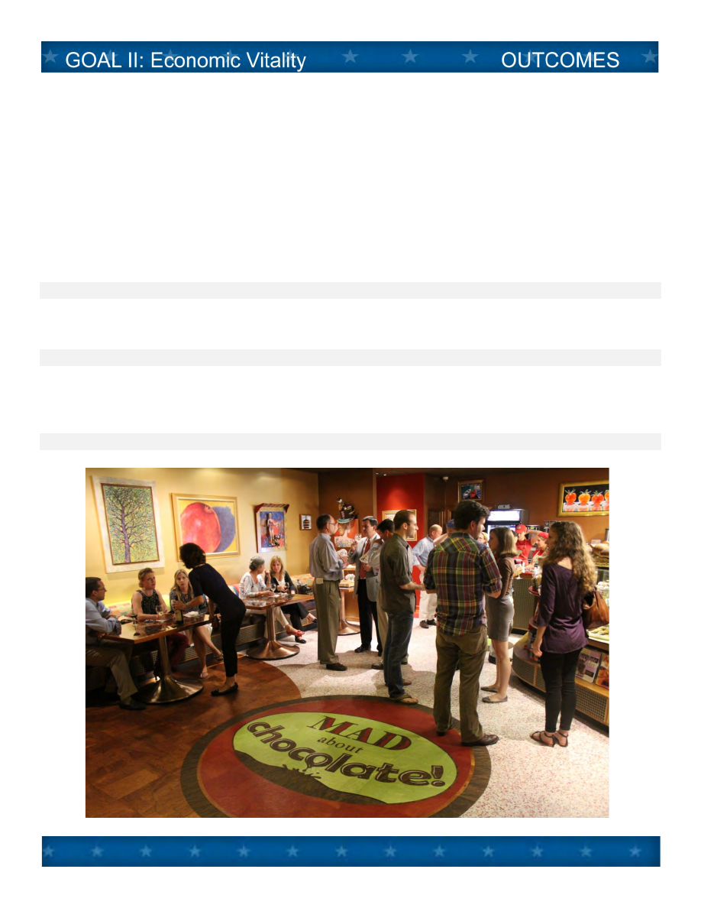
National Citizen Survey Results
Percent Rated
Compared to
“Good”
2012 National
or “Excellent”
Benchmark
Question (NCS page number)
2008 2010 2012
Employment opportunities (p.20)
40% 35% 38%
above
Shopping opportunities (p.20)
76% 77% 72%
much above
Williamsburg as a place to work (p.20)
53% 60% 60%
similar
Overall quality of business and service
65% 71% 71%
much above
establishments in Williamsburg (p.20)
Economic development services (p.21)
48% 49% 56%
above
Page 13
B - 14
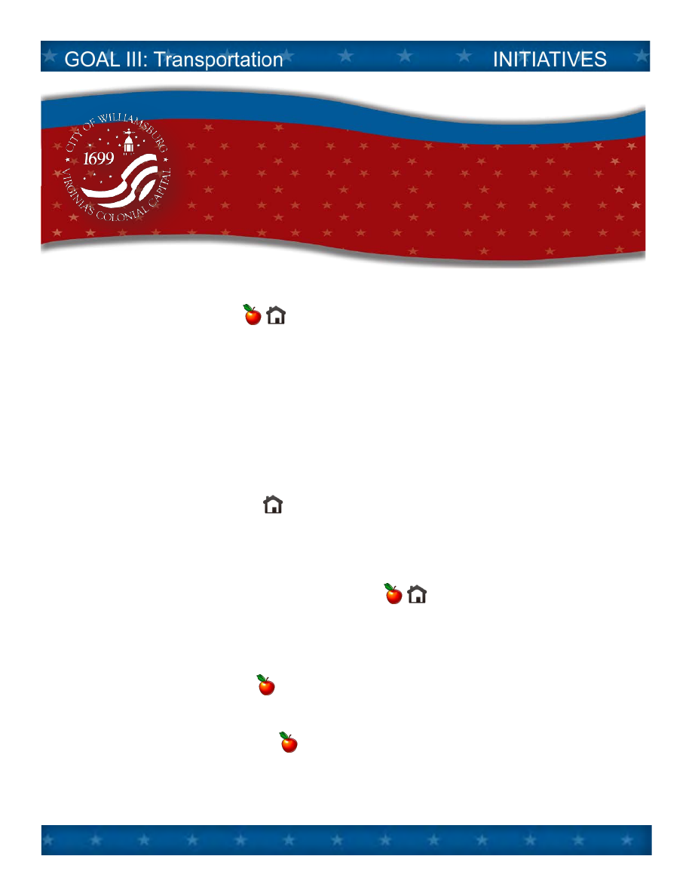
A. Pedestrian Connections
Construct the next set of pedestrian improvements by the end of the biennium, with particular
emphasis on filling in gaps, calming traffic, and taking maximum advantage of VDOT’s revenue
sharing program for sidewalk construction. New sidewalks are proposed on Richmond Road (Waltz
Farm Drive to Patriot Lane), Lafayette Street (Harrison Avenue to Wythe Street), Bypass Road (Route
132 to Parkway Drive), Parkway Drive (Bypass Road to Capitol Landing Road), Ironbound Road
(Middle Street to former Fire Station site), Scotland Street (Prince George Street to King & Queen
Apartments), Francis Street (end of existing sidewalk to Lafayette Street). Brick sidewalks are
proposed on Prince George Street (Armistead Avenue to Scotland Street) and Armistead Avenue
(Prince George Street to Scotland Street).
B. Ironbound Road Widening
Prepare for the widening of Ironbound Road from Richmond Road to Treyburn Drive, including
signalization of the Longhill Road intersection and undergrounding of overhead wires, as the City’s
next major road project scheduled for construction in 2016.
C. Quarterpath at Williamsburg Street Network
Open Battery Boulevard to traffic linking Route 60 to Quarterpath Road, including sidewalk, trail and
bikeway connections, in spring 2013, concurrent with the opening of Doctors’ Hospital of
Williamsburg.
D. Bike Friendly Community
Apply for certification as a Bike Friendly Community from the League of American Bicyclists in 2013.
E. Transportation Center Vision
Create a concept plan by 2014 for expanding the Transportation Center complex north of the CSX
tracks on presently vacant property to demonstrate how the Williamsburg station could
accommodate expanded intercity rail service (AMTRAK) in the future.
GOAL III
Provide an effective transportation system compatible
with the future land use plan, serving pedestrians,
bicyclists and motorists, and promoting the expanded use
of transit and rail.
Page 14
B - 15
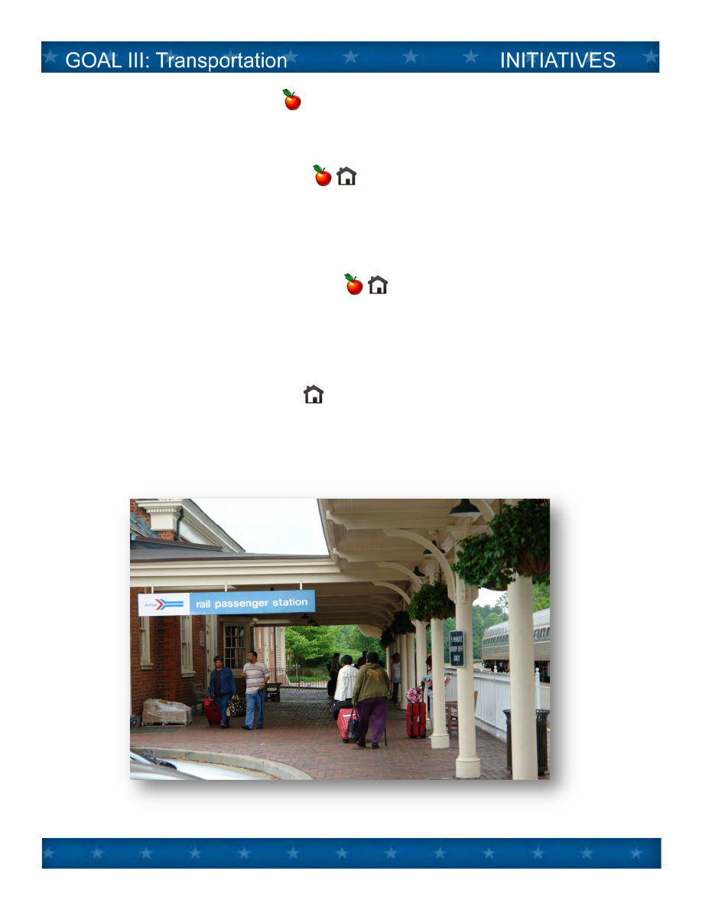
F. Williamsburg Area Transport
Work with transit partners to maintain at least current levels of regional service, including the
Williamsburg Trolley, in an era of declining and uncertain federal and state transit funding.
G. Prince George Street Streetscape
Complete the reconstruction of Prince George Street from Boundary to Armistead during the
biennium, to include wider brick sidewalks, new street lighting and street trees. This project will
extend the Prince George Street 2004 improvements to the west. Find ways to draw customers to
and from Merchants Square and the Delly area.
H. Route 60 East Corridor Improvements
Reapply for federal “Alternative Transportation” and other grants to make improvements to the
function and aesthetics of Route 60 from the eastern edge of the Colonial Williamsburg Historic Area
to Busch Gardens. Lead the effort of the three Historic Triangle localities to obtain funding and make
improvements during the biennium.
I. Page Street Underground Wiring
Bury electric and telecommunications overhead wires along Page Street from the CSX railroad tracks
north to the Colonial Parkway as the city’s next major commercial corridor beautification project
during the biennium.
Page 15
B - 16

Desired Outcomes
Observed Results
1. Improve pedestrian
and rider safety on city
streets as measured by
reducing the number of
accidents with injuries.
Accidents With Injuries
Within City Limits
Average
annual change
over
five years has been
level.
*source:
Williamsburg Police
Department
2. Increase the
ridership regionally on
Williamsburg Area
Transport.
Williamsburg Area
Transport Ridership
Average
annual increase
over
five years: 8.9%
*Source:
Williamsburg Area
Transport
3. Increase the
passenger rail ridership
on Amtrak for trips
origina ng and
termina ng at the
Williamsburg
Transporta on Center.
Amtrak Departures and
Arrivals at Williamsburg
Sta on
Average
annual increase
over
four years: 2.5%
*Source:
Amtrak
4. Achieve “Good” or
“Excellent” ra ngs on
the Na onal Ci zens
Survey for ques ons
related to
“Transporta on”
standing “Much Above”
the na onal
benchmark.
Williamsburg NCS ra ngs
concerning
“Transporta on”
compared to the other
ci es and coun es.
*Source:
Na onal Ci zens
Survey
MUCH ABOVE, 8
ABOVE, 2
SIMILAR, 1
72
55
67
74
72
0
20
40
60
80
FY
2008
FY
2009
FY
2010
FY
2011
FY
2012
770
866
975
1,060
1,080
0
200
400
600
800
1,000
1,200
FY
2008
FY
2009
FY
2010
FY
2011
FY
2012
Thousands
50
49
47
53
0
10
20
30
40
50
60
FY
2008
FY
2009
FY
2010
FY
2011
Thousands
Page 16
B - 17

National Citizen Survey Results
Percent Rated
Compared to
“Good”
2012 National
or “Excellent”
Benchmark
Question (NCS page number)
2008 2010 2012
Ease of car travel in Williamsburg (p.9)
68% 71%
72% much above
Ease of bus travel in Williamsburg (p.9)
43% 57%
55% much above
Ease of bicycle travel in Williamsburg (p.9)
52% 58%
59% much above
Ease of walking in Williamsburg (p.9)
67% 73%
80% much above
Traffic flow on major streets (p.9)
53% 54%
54% above
Street repair (p.11)
61% 64%
58% much above
Street cleaning (p.11)
75% 74%
77% much above
Street lighting (p.11)
67% 68%
73% much above
Snow removal (p.11)
71% 49%
69% above
Sidewalk maintenance (p.11)
66% 60%
68% much above
Amount of public parking (p.11)
44% 50%
49% similar
Page 17
B - 18

A. Community Engagement for Public Safety
Undertake a number of initiatives to engage residents in building a safer community during the
biennium; such as, a stronger School Resource Officer partnership with Berkeley Middle School;
continued emphasis on police partnership with the Neighborhood Relations Committee for improved
town/gown relations; more active Neighborhood Watch program – especially in the Merrimac Trail
area; and continued emphasis on the Citizen Emergency Response Team (CERT) training and
deployment.
B. Fire Department Improvements
Upgrade fire department facilities and equipment over the next two years, including: renovate staff
quarters in the fire station; replace certain personal protective equipment and breathing apparatus
for optimal safety; replace another medic unit; and explore a new EMS reporting system to improve
recordkeeping and reduce emergency room turnaround times for medical response teams.
C. Police Field Reporting
Install new networked laptops in all police vehicles, coupled to law enforcement communication and
records systems, as mobile data terminals to allow complete digital origination of police reports in
the field.
D. Public Safety Physical Fitness
Strengthen the programs and policies of the police and fire departments to continually improve
health and fitness; going beyond the lifestyle education and opportunities of the citywide program, to
enforce job related fitness standards for all police officers and firefighters.
E. Public Safety Leadership and Technical Proficiency
Invest over the biennium in staff development to build leadership capacity and specialized skills;
including advanced leadership/supervisory training for current and prospective senior police and fire
officers; and specialized training, such as crisis intervention team, bicycle instructor, and emergency
medical response for police officers.
GOAL IV
Secure an ever safer community by enabling police, fire,
emergency management and judicial operations to protect and
serve city residents, visitors, businesses and historical assets.
Page 18
B - 19
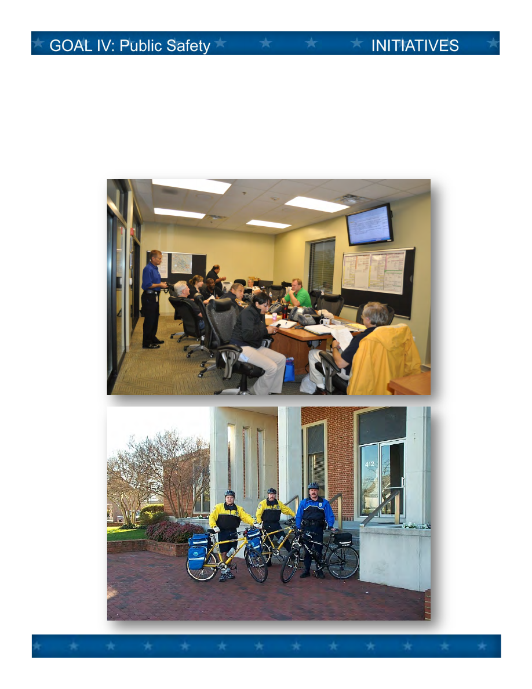
F. Emergency Public Information Enhancements
Explore and evaluate new means of enhancing communication of emergency public information to
residents and visitors to build on existing methods, such as social media, news media, electronic
communication and mass notification systems.
Page 19
B - 20
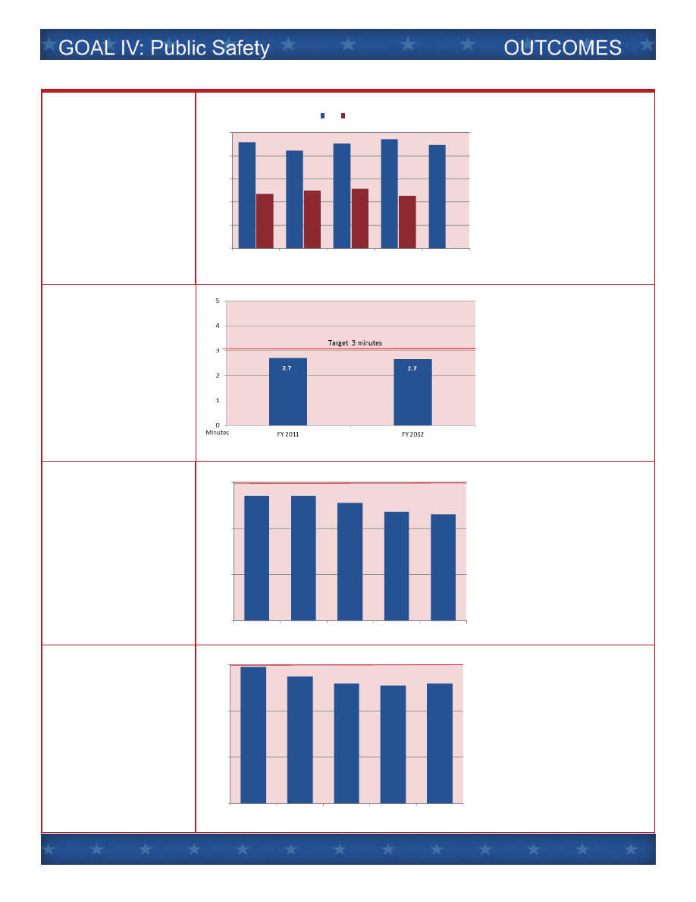
Desired Outcomes
Observed Results
1. Clear Part I crimes at
a rate well exceeding
the na onal average.
(Part
1 crimes are major
crimes
such as: murder,
rape,
robbery, assault,
burglary,
larceny and
auto
the ).
Clearance rate for
Part I crimes for
Williamsburg and
na onally
Williamsburg
exceeds
na onal
rate by
approximately
100%
*source:
Williamsburg Police
Department
and FBI
2. Respond to Police
calls for service
averaging under 3
minutes from me of
dispatch to arrival on
scene.
Average Police
Response Time
*source:
Williamsburg Police
Department
3. Respond to calls for
fire and non‐EMS
emergencies averaging
under 6 minutes from
me of dispatch to
apparatus arrival on
scene.
Average Fire
Response Time
*source:
Williamsburg Fire
Department
4. Respond to
emergency medical
(EMS) calls for service
averaging under 6
minutes from me of
dispatch to Advanced
Life Support (ALS)
arrival on scene.
Average ALS response Time
*
source:
Williamsburg Fire
Department
46%
42%
45%
47%
45%
24%
25%
26%
23%
0%
10%
20%
30%
40%
50%
FY
2008
FY
2009
FY
2010
FY
2011
FY
2012
City
National
5.4
5.4
5.1
4.7
4.6
0
2
4
6
FY
2008
FY
2009
FY
2010
FY
2011
FY
2012
Minutes
Target
6 minutes
5.9
5.5
5.2
5.1
5.2
0
2
4
6
FY
2008
FY
2009
FY
2010
FY
2011
FY
2012
Minutes
Target
6 minutes
Page 20
B - 21

Desired Outcomes
Observed Results
5. Maintain “fitness for
duty” as determined by
annual medical and
fitness evalua on for all
police officers and
firefighters.
Percent of Police and Fire
Personnel Found “Fully
Fit” for Duty.
Police
FY 12 : 91%
Fire
FY 12: 94%
*Source:
Williamsburg Police
and
Fire Departments
6. Maintain
cer fica ons of public
safety and emergency
readiness.
*Source:
Williamsburg Police
and
Fire Departments
7. Increase and
maintain the number of
trained and func oning
Neighborhood
Response Teams in the
City’s 8 CERT Sectors.
Number of Trained CERT
Volunteers Available to
Staff NRTs.
*Source:
Williamsburg Human
Services
8. Achieve “Good” or
“Excellent” ra ngs on
the Na onal Ci zens
Survey for ques ons
related to “Public
Safety” standing “Much
Above” the na onal
benchmark.
Williamsburg NCS ra ngs
concerning “Public Safety”
compared to the other
ci es and coun es.
*Source:
Na onal Ci zens
Survey
Police
Agency
National
Re
‐Accreditation
(CALEA - 2012)
"Storm
Ready"
Community
Designation
(NOAA - 2011)
MUCH
ABOVE, 8
ABOVE,
3
35
33
32
32
29
2
1
2
1
29
19
14
34
30
12
15
3
0
5
10
15
20
25
30
35
40
FY
08
FY
09
FY
10
FY
11
FY
12
Fire
‐Fit
Fire
‐Marginal
Fire
‐Not Fit
Police
‐Fit
Police
‐Marginal
70
75
0
20
40
60
80
100
FY
2011
FY
2012
Page 21
B - 22

National Citizen Survey Results
Percent Rated
Compared to
“Good”
2012 National
or “Excellent”
Benchmark
Question (NCS page number)
2008 2010 2012
Safety in Williamsburg’s downtown area
78%/ 80%/ 83%/
much above
after dark/during the day (p.23)
97% 95% 97%
Safety in your neighborhood after dark/
77%/ 84%/ 81%/
above
during the day (p.23)
95% 96% 98%
Safety from property crimes (p.23)
73% 78% 78%
much above
Safety from violent crimes (p.23)
80% 84% 86%
much above
Police services (p.26)
81% 84% 88%
much above
Fire services (p.26)
94% 96% 95%
above
EMS services (p.26)
92% 95% 92%
much above
Crime prevention services (p.26)
80% 86% 84%
much above
Fire prevention and education
80% 90% 87%
much above
services (p.26)
Traffic enforcement services (p.26)
64% 69% 72%
above
Emergency preparedness (p.26)
69% 78% 73%
much above
Page 22
B - 23

A. Williamsburg Redevelopment and Housing Authority (WRHA) Integration
Enter into a memorandum of understanding with WRHA creating a formal, integrated operating
structure between the city and WRHA, and create a citizen housing advisory committee to provide
input and feedback on public housing; by March 2013.
B. Blayton Elderly Housing Expansion
Research viable funding opportunities and development partners as a joint City/Williamsburg
Redevelopment and Housing Authority (WRHA) venture, to expand low and moderate income elderly
housing on Blayton property during the biennium.
C. Youth Achievement
Expand the after-school component of the city’s year round Youth Achievement Program to include
career, dance and Outward Bound activities starting in January 2013 for approximately 50 city
children. Evaluate results to determine continuation of program components during the biennium.
Coordinate city efforts with school engagement initiatives which also target Youth Achievement
children and families.
D. Senior Support
Expand the scope of services over the biennium to approximately 50 additional senior for in-home
visitation by volunteers, and coordination of more intensive services as needed, such as transition to
assisted living and nursing care.
E. Homeless Prevention
Assist the new consortium of churches in the region (Greater Williamsburg Outreach Ministries) to
provide temporary and transitional shelter integrated with the city’s ongoing work to prevent
homelessness and move city residents in crisis into stable housing.
GOAL V
Seek opportunities and implement programs that address the
educational, health, social, housing, economic and workforce
training needs and expectations of city residents and workers.
B - 24

F. SNAP at Farmers Market
Implement Supplemental Nutrition Assistance Program (SNAP) at the Williamsburg Farmers Market
during the 2013 market season to provide healthy, fresh produce and products to SNAP eligible
families in the region.
G. Fourth Middle School
Work with the Williamsburg/James City County Schools and with James City County to be ready to
open a fourth middle school when required. This includes the work of the joint chief administrative
officer committee to study relocation of the School’s Central Office to a permanent, efficient and
effective building; and renovation and/or replacement of the existing James Blair facility as the fourth
middle school. Negotiate the respective city share of these improvements with James City County
during the biennium.
B - 25

Desired Outcomes
Observed Results
1. Achieve passing
scores for W/JCC
students residing in the
city of at least 95%.
3rd Grade Reading
Passing Rate for the SOLs
at Ma hew Whaley
Elementary School:
Passed
in FY 12: 91%
*Source:
W/JCC Schools
2. Achieve annual
a endance rates for W/
JCC students residing in
the city of at least 94%.
Average Annual School
A endance Rates for City
Children
*Source:
W/JCC Schools
3. Reduce and maintain
the number of city
resident families
requiring food stamp
(SNAP) at less than 450
on average.
Average Number of
Families Receiving Food
Stamps in City.
*Source:
Williamsburg Human
Services
4. Reduce and maintain
the number of city
residents requiring
Medicaid at less than
450 on average.
Average Number of
Residents Receiving
Medicaid Benefits in City
*Source: Williamsburg Human
Services
242
323
414
511
527
200
300
400
500
600
FY2008
FY2009
FY2010
FY2011
FY2012
Target
450
48.0%
35.4%
45.9%
22.0%
43.5%
43.0%
54.2%
32.8%
67.8%
40.3%
9.0%
10.4%
21.3%
10.2%
16.1%
0%
25%
50%
75%
100%
2012
2011
2010
2009
2008
Pass
Rate 2012: W‐JCC: Adv 45% Prof 48% Fail 8%
Virginia:
Adv 38% Prof 48% Fail 14%
Advanced
‐Pass
Proficient
Fail
93.8%
93.3%
93.8%
94.3%
92.8%
93.0%
93.2%
93.4%
93.6%
93.8%
94.0%
94.2%
94.4%
2009
2010
2011
2012
Target
94%
369
415
453
491
547
200
300
400
500
600
FY2008
FY2009
FY2010
FY2011
FY2012
Target
450
B - 26

Desired Outcomes
Observed Results
5. Reduce and maintain
the number of city
residents requiring
Temporary Aid for
Needy Families (TANF)
at less than 40 on
average.
Average Number of
Residents Receiving
Temporary Aid for Needy
Families in City
*Source:
Williamsburg Human
Services
6. Exceed statewide
success rate of VIEW
(VA Incen ve for
Employment Not
Welfare) program
par cipants at finding
jobs.
Percent of Par cipants
Finding Employment
*Source:
Virginia Department of
Social
Services
7. Increase and
maintain the number of
city youth that
par cipate in the city’s
youth achievement
program at 60 children.
Number of Youth
Achievement Program
Par cipants
*Source:
Williamsburg Human
Services
8. Maintain 50% or
more of for‐sale
housing units in the City
at less than $250,000 to
provide affordable
housing.
Percent of Residen al
Proper es Valued at
$250,000 or Less
.
*Source:
Williamsburg City
Assessor
23
29
38
29
45
20
30
40
50
FY2008
FY2009
FY2010
FY2011
FY2012
Target
40
79%
64%
64%
72%
50%
58%
54%
48%
47%
49%
0%
20%
40%
60%
80%
100%
FY2008
FY2009
FY2010
FY2011
FY2012
City
State
23
36
61
54
75
0
20
40
60
80
100
FY2008
FY2009
FY2010
FY2011
FY2012
Target
60
48%
50%
52%
54%
0%
20%
40%
60%
80%
100%
FY2009
FY2010
FY2011
FY2012
Target
50
B - 27
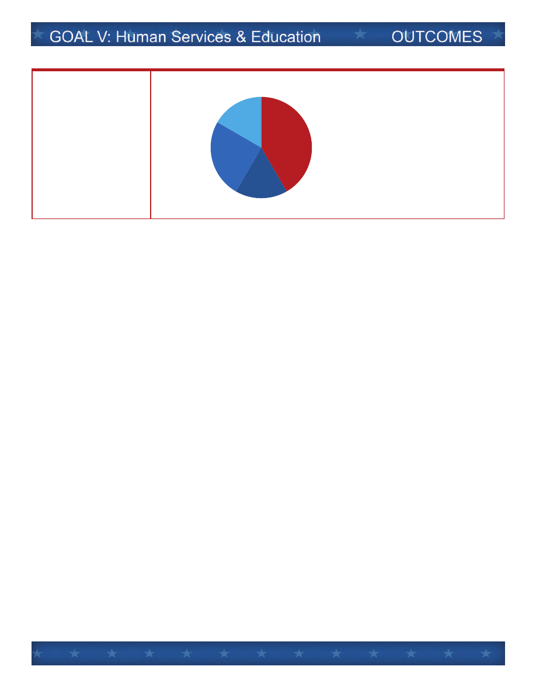
Desired Outcomes
Observed Results
9. Achieve “Good” or
“Excellent” ra ngs on
the Na onal Ci zens
Survey for ques ons
related to “Educa on
and Human Services”
standing “Much Above”
the na onal
benchmark.
Williamsburg NCS ra ngs
concerning “Educa on and
Human Services”
compared to the other
ci es and coun es.
*Source:
Na onal Ci zens
Survey
MUCH ABOVE, 5
ABOVE, 2
SIMILAR, 3
BELOW, 2
B - 28

National Citizen Survey Results
Percent Rated
Compared to
“Good”
2012 National
or “Excellent”
Benchmark
Question (NCS page number)
2008 2010 2012
Educational opportunities (p.34)
78% 85% 85%
much above
Public Schools (p.35)
67% 78% 83%
much above
Availability of affordable quality
50% 55% 64%
much above
health care(p.36)
Availability of affordable quality
--- 72% 67%
above
food (p.36)
Availability of preventive health services
52% 60% 66%
above
(p.36)
Health and wellness services (p.37) 65% 73% 78%
much above
Availability of affordable quality child care 28% 35% 48%
similar
(p.38)
Services to seniors (p.40)
75% 79% 79%
much above
Services to youth (p.40)
50% 55% 56%
similar
Services to low-income people (p.40) 37% 42% 49%
similar
Availability of affordable quality
20% 30% 38% below
Housing (p.15)
Variety of housing options (p.15)
36% 42% 53% below
B - 29

A. Sports Tourism
Support the Greater Williamsburg Chamber and Tourism Alliance in assessing facility needs for sports
tourism and in hosting athletic competitions which add significantly to overnight visitation.
Specifically, support events such as the 2013 National Softball Association (NSA) World Series Fast
Pitch Softball tournament (July 22-28) by providing city softball fields and facilities, and provide public
safety support for the Revolutionary 3 Half Triathlon (June 2013). Continue to build participation in
“Run for the Dream;” and add more races.
B. Country Road West
Work with Colonial Williamsburg Foundation and James City County to retain the Country Road
between the Historic Area and Kingsmill as a hiking and biking trail before the end of the biennium.
C. Waller Mill Park Improvements
Replace the bulkhead and permanent boardwalk, replace existing permanent dock with a floating
dock, and reconfigure the boat ramp in fall 2014. Establish a garden at Waller Mill Park in partnership
with Virginia Dominion Power for the purpose of education and outreach by November 2012.
D. Quarterpath Park and Recreation Center Improvements
Replace roof on the Quarterpath Recreation Center which also serves as the City’s Emergency Shelter
and the location of the IT Department’s backup servers in July 2013. Resurface the tennis courts
weather permitting by early spring 2013. Make a decision on the future of Quarterpath Pool by fall
2012 and implement decision.
E. Neighborhood Parks ADA Compliance
Assess the current condition of the City’s park system to determine if the parks are compliant with
the standards set forth in the ADA before the 2015 regulatory deadline.
GOAL VI
Add to the quality and availability of cultural and recreational
facilities and programming, as might be typically available only
in larger communities, to meet the needs and expectations of
city residents and visitors.
Page 29
B - 30

F. Kiwanis Park Improvements
Resurface tennis courts and basketball court by early spring 2013. Develop unlighted infield portion
of 4th softball field during fall 2012, and the full field by 2014. Install safety netting on softball fields
along the sideline fence to protect spectators from errant thrown and batted balls during winter
2013.
G. Friends of the Park Program
Grow the Friends of the Park program to at least 20 volunteers in 2013 to support the operations and
maintenance needs in city parks.
H. Great City Walks App
Develop a mobile device App for the Great City Walks trail guide during 2013.
I. Future of This Century Art Gallery
Work with and assist This Century Art Gallery on a future gallery location within the city limits.
J. Future of Quarterpath Pool
Decide upon the future of the pool at Quarterpath Recreation Center and take initial steps to
implement the decision. Ensure city children have effective opportunities to learn to swim.
Page 30
B - 31

Desired Outcomes
Observed Results
1. Increase the total
number of recrea on
program par cipants
(consistent with
percent of city resident
par cipants and cost
recovery goals below).
Total Number of
Par cipants in all P&R
Programs.
Average
annual increase
over
five years: 9%
*Source:
Williamsburg Parks and
Recrea on
2. Increase the percent
of city resident
par cipants in
recrea on programs
rela ve to total number
of par cipants.
Percent of Total P&R
Program Par cipants who
are City Residents
Average
annual increase
over
five years: near level
*Source:
Williamsburg Park and
Recrea on
3. Increase percentage
of total Parks and
Recrea on opera ng
costs covered by user
fees.
Percent of Total P&R
Opera ng Costs Covered
by User Fees
Average
annual increase
over
five years: 3%
*Source:
Williamsburg Parks and
Recrea on
4. Achieve a rate of
ac ve library cards held
by residents (including
William and Mary
students) of at least
one half of total
popula on.
Percent of City Popula on
Holding a Valid Library
Card
7055
cards in FY12
*Source:
Williamsburg Regional
Library
23.7%
20.9%
22.2%
23.7%
24.1%
0%
10%
20%
30%
40%
50%
FY2008
FY2009
FY2010
FY2011
FY2012
22%
24%
29%
34%
34%
0%
10%
20%
30%
40%
50%
FY2008
FY2009
FY2010
FY2011
FY2012
48%
50%
53%
49%
49%
25%
50%
75%
FY2008
FY2009
FY2010
FY2011
FY2012
18,899
20,902
21,376
22,010
26,135
10,000
15,000
20,000
25,000
30,000
FY2008
FY2009
FY2010
FY2011
FY2012
Page 31
B - 32
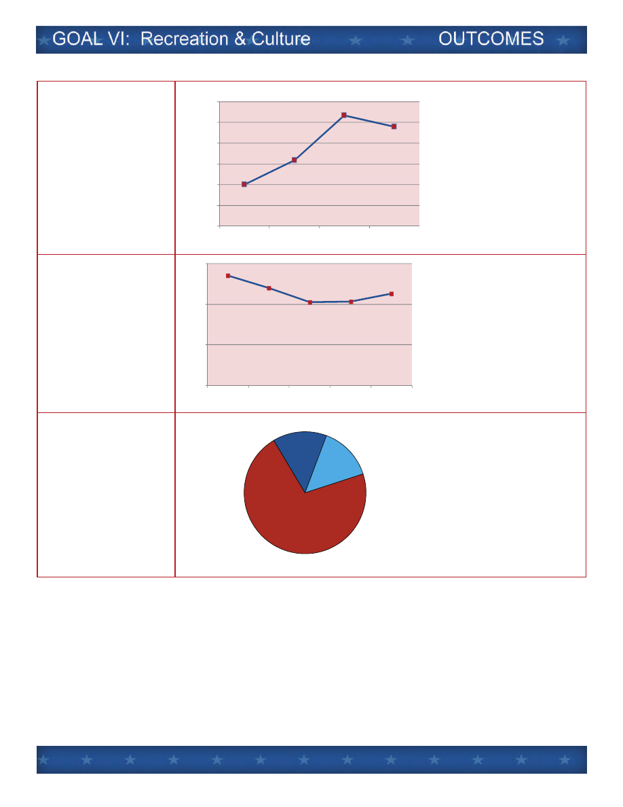
Desired Outcomes
Observed Results
5. Achieve
Williamsburg Farmers
Market annual vendor
sales of at least
$1 million
Farmers Market Total
Sales by Vendors
*Source:
Williamsburg Farmers
Market
6. Increase a endance
at the Virginia Arts
Fes val’s annual
“FesƟval Williamsburg”
events each year.
Number of General Public
and Students A ending
Fes val Williamsburg
Events
Average
annual decrease
over
five years: ‐4%
*
Source: Virginia Arts Fes val
7. Achieve “Good” or
“Excellent” ra ngs on
the Na onal Ci zens
Survey for ques ons
related to “Recrea on
and Culture” standing
“Much Above” the
na onal benchmark.
Williamsburg NCS ra ngs
concerning “Recrea on
and Culture” compared to
the other ci es and
coun es.
*Source:
Na onal Ci zens
Survey
MUCH
ABOVE,
5
ABOVE,
1
SIMILAR,
1
$701,156
$817,357
$1,034,984
$979,397
$500,000
$600,000
$700,000
$800,000
$900,000
$1,000,000
$1,100,000
2008
2009
2010
2011
5,425
4,812
4,111
4,141
4,524
0
2,000
4,000
6,000
2008
2009
2010
2011
2012
Page 32
B - 33
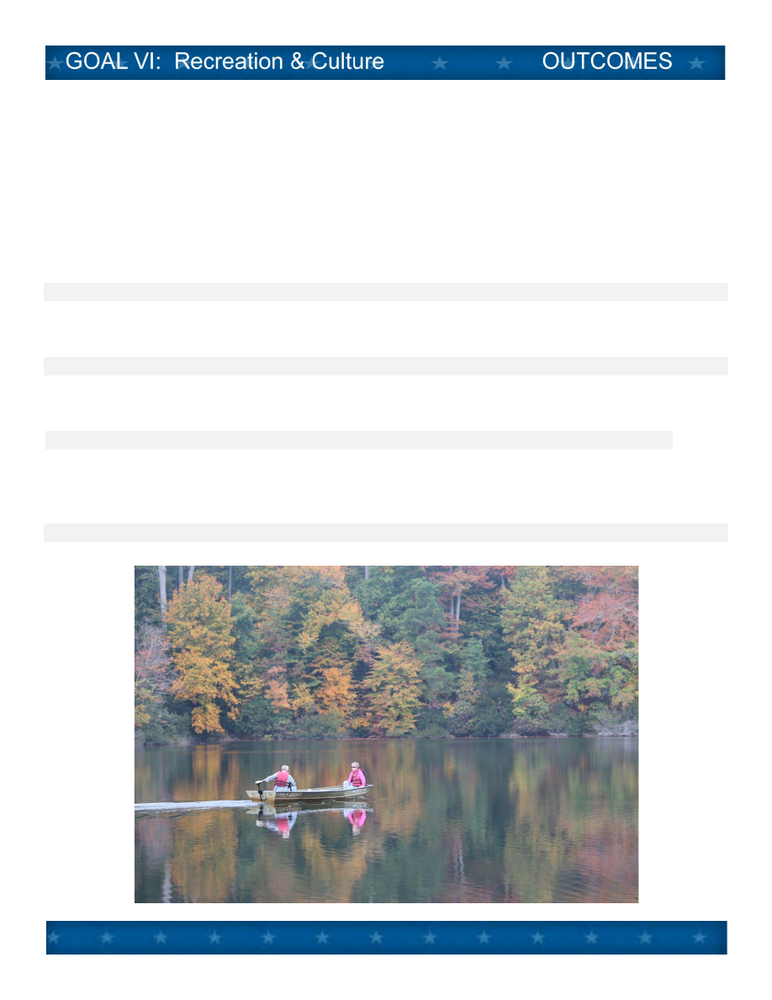
National Citizen Survey Results
Percent Rated
Compared to
“Good”
2012 National
or “Excellent”
Benchmark
Question (NCS page number)
2008 2010
2012
Recreational opportunities (p.32)
73% 73%
71%
much above
City Parks (p.33)
87% 91%
87%
similar
Recreation programs and classes (p.33)
74% 87%
84% much above
Recreation centers and facilities (p.33)
74% 86%
83% much above
Public library services (p.35)
91% 94%
94% much above
Opportunities to attend cultural activities
63% 72%
76% much above
(p.34)
Availability of paths and walking trails (p.9)
54% 62%
69% above
Page 33
B - 34

A. Stormwater Management
Implement requirements of various existing and proposed state and federal stormwater runoff
regulations, in 2013 and 2014. Complete annual reports outlining activities by October each year,
avoiding if possible, imposition of a stormwater utility tax.
B. Wastewater Treatment
Meet deadlines in the Virginia Department of Environmental Quality (DEQ) Consent Order during the
biennium. Use video inspections of sanitary sewers city wide to find and fix piping and manholes in
order to reduce inflow and infiltration (I&I) into the system. Participate in the regional wastewater
consolidation study underway which would put the locality sewer systems under one agency -
Hampton Roads Sanitation District.
C. Drinking Water Conservation
Promote water conservation through community outreach programs and events, such as Hampton
Road Water Efficiency Team, Williamsburg Farmers Market, Earth Day events, and public relations
activities during the biennium.
D. Drinking Water System
Procure engineering consultant by 2014 to develop plans and specifications for painting of three
water tanks. Replace approximately 200 linear feet small diameter galvanized water lines. Work with
new development projects such as Quarterpath at Williamsburg to enhance the water system
concurrent with development.
E. Extraordinary Environmental Enterprise
Maintain highest level of certification by the Department of Environmental Quality (DEQ) as an
“Extraordinary Environmental Enterprise – E4” for the Public Works complex.
F. Voluntary Residential Refuse Collection
Extend on a voluntary basis curbside refuse collection to at least two additional neighborhoods using
distinctive carts with the city seal during the biennium.
GOAL VII
Build an evermore sustainable and healthy city pursuing
multiple strategies for conservation and restoration, and
providing essential environmental services related to drinking
water, waste water, stormwater and solid waste.
Page 34
B - 35

G. Expanded Recycling/Reuse
Increase business recycling in the city, specifically in the Merchants Square area. Add more types of
plastics to the curbside program, and investigate larger bin options. Work with Virginia Peninsulas
Public Service Authority to bid and award new multi-year contract for residential recycling program in
FY14. Explore feasibility of holding a “Shred-it” event, which provides residents with a secure mobile
paper shredding and document destruction service.
H. Waller Mill Watershed
Finalize purchase of two parcels of land in the watershed in 2012 and look for other opportunities to
purchase property. Secure a permit from the Virginia Department of Conservation and Recreation to
maintain and operate the Waller Mill dam which has been reclassified as a high hazard dam.
Page 35
B - 36

Desired Outcomes
Observed Results
1. Recycle 37.5% of
solid waste stream
(150% of Virginia’s 25%
recycling goal).
Percent of Waste Stream
Recycled (145% of stated
goal in 2011).
145%
of stated goal in 2011
*Source:
Williamsburg Public
Works
& U li es.
2. Maintain residen al
recycling set‐out rate of
at least 42%
Average Percent of
Recycling Bins Issued to
City Residents Set‐Out on
a Recycling Day.
*Source:
Williamsburg Public
Works
& U li es
3. Increase
par cipa on in the
City’s Green Business
and Residen al
Challenges each year.
Number of Business and
Households Par cipa ng
in Annual “Challenge”
Programs
*Source:
Williamsburg Green
Team
4. Conserve drinking
water by reducing daily
household equivalent
consump on below 165
gallons per day.
Water Consumed in Gallons
Per Day Per Equivalent
Household Connec ons
*
Source: Williamsburg Public
Works & U li es
36%
22%
27%
36%
0%
20%
40%
60%
80%
100%
FY2008
FY2009
FY2010
FY2011
54
75
0
20
40
60
80
100
FY2011
FY2012
173
172
155
170
166
80
120
160
200
FY2008
FY2009
FY2010
FY2011
FY2012
Target
165
40%
44%
42%
41%
43%
0%
20%
40%
60%
80%
100%
FY2008
FY2009
FY2010
FY2011
FY2012
Target
42%
Page 36
B - 37
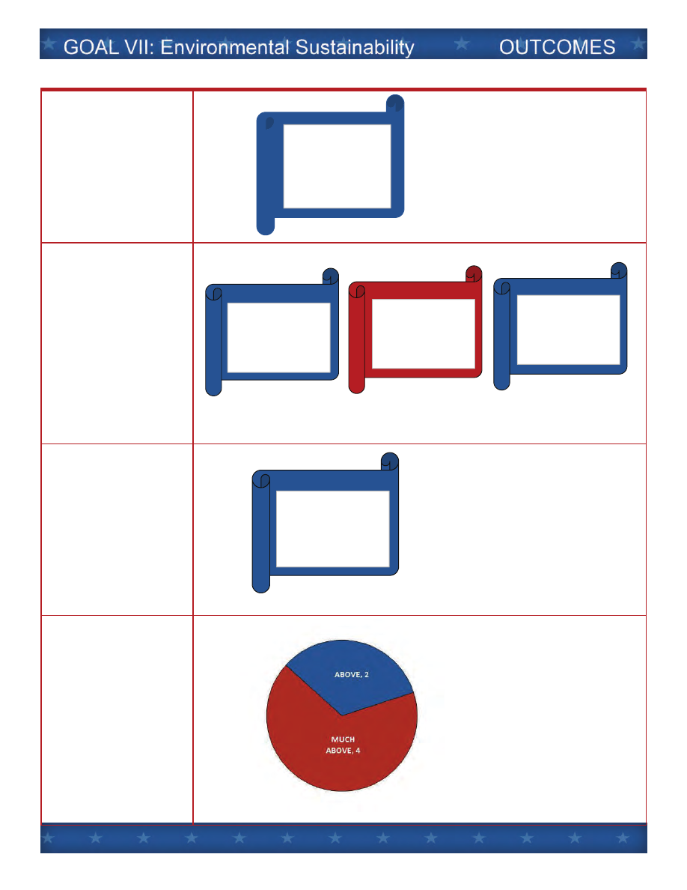
Desired Outcomes
Observed Results
5. Maintain
cer fica ons of
compliance with
Federal/State safe
drinking water
regula ons.
*Source:
Williamsburg Public
Works
& U li es
6. Maintain
cer fica ons of
compliance with
Federal/State “Clean
Water” regula ons.
*Source:
Williamsburg Public
Works
& U li es
7. Maintain
recer fica on of the
Public Works
Department as an
“Extraordinary
Environmental
Enterprise” (E4)
*Source:
Williamsburg Public
Works
& U li es
8. Achieve “Good” or
“Excellent” ra ngs on
the Na onal Ci zens
Survey for ques ons
related to
“Environmental
Sustainability” standing
“Much Above” the
na onal benchmark.
Williamsburg NCS ra ngs
concerning
“Environmental
Sustainability” compared
to the other ci es and
coun es.
*Source:
Na onal Ci zens
Survey
All Federal/State
Safe Drinking
Water Regulations
Met with Full
Compliance
Chesapeake Bay
Protection Act
(DNR‐2011)
Stormwater
Discharge MS‐4
Permit
Erosion & Sediment
Law
(DNR‐2007)
Department of
Environmental
Quality E‐4 Program
(DEQ ‐ 2012)
Page 37
B - 38

National Citizen Survey Results
Percent Rated
Compared to
“Good”
2012 National
or “Excellent”
Benchmark
Question (NCS page number)
2008 2010 2012
Sewer services (p.31)
86% 82% 88%
much above
Drinking water (p.31)
64% 73% 73%
much above
Storm drainage (p.31)
67% 70% 72%
much above
Yard waste pick-up (p.31)
80% 76% 82%
much above
Recycling (p.31)
74% 81% 81%
above
Garbage collection (p.31)
91% 79% 90% above
Page 38
B - 39

A. Stryker Center – City/Library Partnership
Replace the 1967 Stryker Building with a facility to include a City Council chamber and conference
room, community gallery/exhibit space, public meeting rooms, music and entertainment and Library
administrative space. Technology for video production and origination, educational and cultural
programming, film screen, and all kinds of community meetings and activities, would be shared by
the City and Library. Open the new facility by the end of 2014 as the next major addition to the “City
Square” municipal center.
B. Community Engagement
Enhance volunteerism and citizen engagement. Specific ideas include more effective on-line
recruiting of citizens to serve on Boards and Commissions, and launching “Friends of the Park” (See
Goal VI: Recreation and Culture)
. Adopt a statement of expectations based citizen input by June
2013 for neighborly behavior called “Customs and Courtesies,” which becomes a widely recognized
and respected code of conduct, but without the force of law.
C. Neighborhood Relations Committee
Support the work of the Neighborhood Relations Community (composed of city, college, student,
resident and landlord representation) to build partnerships and resolve problems in neighborhoods
near the College to continue progress in town/gown relations over the biennium.
D. Employee Succession
Prepare and act during the upcoming biennium to replace key city staff members upon their
projected retirement to perpetuate excellence in the city workforce and uphold responsive and
effective city services.
E. Performance Management System
Expand the use of automated, individual performance dashboards to at least two-thirds of city
employees by the end of the biennium, and incorporate dashboard measures in to city budget and
goal setting document. Expand number and usefulness of “public dashboards.” Retain ICMA
“Certificate of Excellence” from the Center for Performance Measurement.
GOAL VIII
Continuously improve the effectiveness of city government
and its partnership with the people who live, work, and visit
here to fulfill Williamsburg’s vision for the future.
B - 40

F. Employee Health & Wellness
Take the City’s recently adopted Health & Wellness Program to the next level and demonstrate
outcomes and degree of effectiveness. Find ways to connect the in-house program to community
initiatives to encourage healthy lifestyles.
G. Leadership Philosophy
Enable and encourage a workplace culture where all employees take increasing personal and joint
ownership for the effectiveness of city government and for outcomes in the community. Adopt a
formal “leadership philosophy” statement and take steps to infuse it into the city organization at all
levels during the biennium.
B - 41
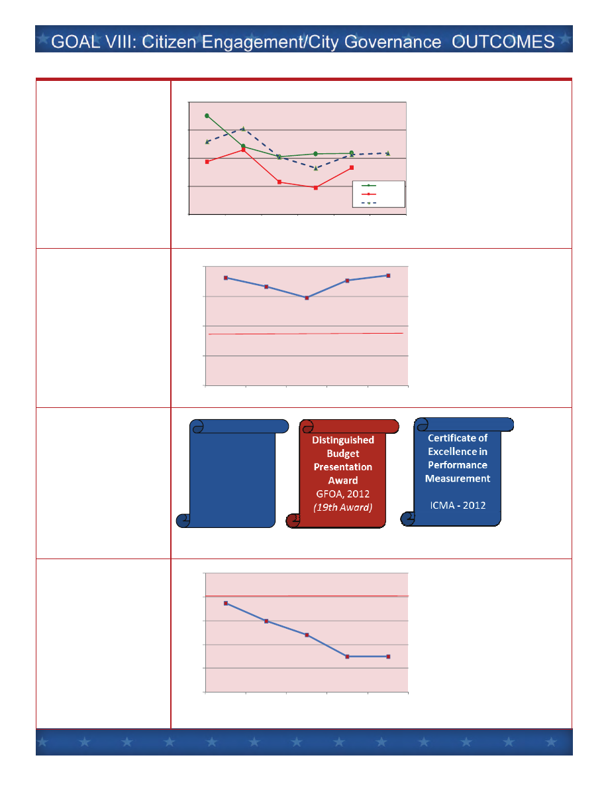
Desired Outcomes
Observed Results
1. Exceed budget
expecta ons by having
opera ng revenues
exceed opera ng
expenditures each year.
Annual Opera ng
Revenues Compared to
Budget and to Actual
Expenditures
*Source:
Williamsburg Finance
Department
2. Maintain sound
fiscal health by
exceeding city’s 35%
opera ng reserve
policy.
Percent of Unreserved
General Fund Balance
Compared to the Amount
of the Annual Opera ng
Revenues
*Source:
Williamsburg Finance
Department
3. Retain cer fica ons
in financial repor ng,
budget presenta on,
and performance
measurement.
*Source:
Williamsburg Finance
Department
4. Maintain annual
Employee Turnover
Rate of 10% or less of
the permanent
workforce.
Percent of City Employees
who Resign or Re re or
Otherwise Terminate
Employment
*Source:
Williamsburg Human
Resources
Certificate of
Achievement for
Excellence in
Financial
Reporting
GFOA,
2012
$33.2
$34.1
$32.1
$31.3
$32.3
$32.4
$28
$30
$32
$34
$36
FY 2008 Actual
FY 2009 Actual
FY 2010 Actual
FY 2011 Actual
FY 2012
Estimated
FY 2013 Budget
millions
Revenues
Expenditures
Budgeted
72.7%
66.5%
59.2%
70.8%
74.0%
0%
20%
40%
60%
80%
FY
2008
FY
2009
FY
2010
FY
2011
FY
2012
Target
35%
9.5%
8.0%
6.8%
5.0%
5.0%
2%
4%
6%
8%
10%
12%
FY
2008
FY
2009
FY
2010
FY
2011
FY
2012
Target
10%
B - 42
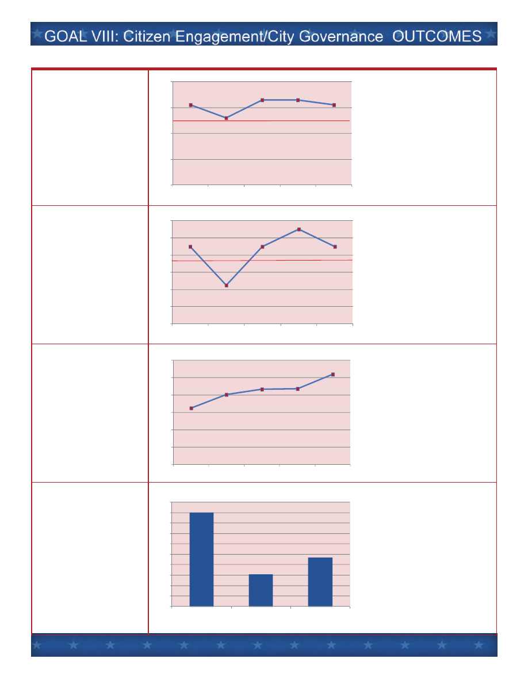
Desired Outcomes
Observed Results
5. Reduce Employee
Sick Leave used per
total hours worked to
2.5% or less.
Total Sick Leave Taken as a
Percent of Total Hours
Worked Annually
*Source:
Williamsburg Human
Resources
6. Reduce number of
Auto and General
Liability claims paid
annually to 15 or less.
Auto and General Liability
Claims Paid Out and,
Number of General
Liability Claims Paid by
the City Annually
*Source:
Williamsburg Finance
Department
7. Reduce employee
health insurance claims
paid to less than 5%
annual growth rate.
Amount of Health
Insurance Claims Paid by
the City
Increase
between FY08 and
FY
12 was at an annual rate
of
12.8%
*Source:
Williamsburg Human
Resources
8. Accomplish
employee training as a
percent of all
employees: QUEST
Employee Orienta on
(100%), SELF
Supervisory training
(30%), and High
Performance
Organiza on training
(65%).
Number of Employees
Comple ng Training
QUEST:
98% completed
SELF:
33% completed
HPO:
50% completed
*Source:
Williamsburg Human
Resources
$1.30
$1.61
$1.73
$1.74
$2.08
$0.0
$0.4
$0.8
$1.2
$1.6
$2.0
$2.4
FY
2008
FY
2009
FY
2010
FY
2011
FY
2012
$
Millions
180
61
93
0
20
40
60
80
100
120
140
160
180
200
QUEST
SELF
HPO
3.1%
2.6%
3.3%
3.3%
3.1%
0%
1%
2%
3%
4%
FY
2008
FY
2009
FY
2010
FY
2011
FY
2012
Target
2.5%
18
9
18
22
18
0
4
8
12
16
20
24
FY
2008
FY
2009
FY
2010
FY
2011
FY
2012
Target
15
B - 43

Desired Outcomes
Observed Results
9. Increase the use of
online transac ons
between ci zens and
city by at least 5%
annually.
Number of Online
Transac ons via
Williamsburgva.com.
Average
annual increase
over
five years: 12%
*Source:
Williamsburg
Informa on
Technology
10. Increase the
number of ci zens who
receive “E‐no fy” email
no ces of city events
and informa on.
Number of Ci zens Signed
Up to Receive Email
No ces through “E‐no fy”
Average
annual increase
over
five years: 53%
*Source:
Williamsburg
Informa on
Technology
11. Increase use of
social media as a means
of dissemina ng public
informa on.
Number of City Facebook
Fans and Twi er
Followers
Facebook
up: 60%
Twi er
up: 108%
*Source:
Williamsburg
Communica ons
Specialist
12. Achieve “Good” or
“Excellent” ra ngs on
the Na onal Ci zens
Survey for ques ons
related to “Ci zen
Engagement” and “City
Governance” standing
“Much Above” the
na onal benchmark.
Williamsburg NCS ra ngs
concerning “Ci zen
Engagement” and “City
Governance” compared to
the other ci es and
coun es.
*Source:
Na onal Ci zens
Survey
4,061
4,288
4,996
5,858
6,399
0
2,000
4,000
6,000
8,000
10,000
FY
2008
FY
2009
FY
2010
FY
2011
FY
2012
756
1,686
1,517
2,276
3,412
0
2,000
4,000
6,000
FY
2008
FY
2009
FY
2010
FY
2011
FY
2012
1,502
2,402
582
1,210
0
500
1,000
1,500
2,000
2,500
3,000
FY
2011
FY
2012
Facebook
Twitter
B - 44

National Citizen Survey Results
Percent Rated
Compared to
“Good”
2012 National
or “Excellent”
Benchmark
Question (NCS page number)
2008 2010 2012
The value of services for the taxes
76% 73% 75%
much above
paid to Williamsburg (p.48)
The overall direction that Williamsburg
55% 60% 65%
much above
is taking (p.48)
The job Williamsburg government does
62% 62% 63%
much above
at welcoming citizen involvement (p.48)
Overall image or reputation
85% 87% 93%
much above
of Williamsburg (p.48)
Opportunities to participate in community
69% 71% 77% much above
matters (p.41)
Opportunities to volunteer (p.41)
80% 86% 87% much above
Public information services (p.45)
76% 80% 84% much above
Knowledge of city employees (p.51)
90% 83% 87%
much above
Responsiveness of city employees (p.51)
91% 77% 82%
much above
Courtesy of city employees (p.51)
91% 85% 85%
much above
Overall impression of city employees (p.51)
91% 79% 82%
much above
Services provided by city (p.49)
75% 82% 86% much above
B - 45

CITY OF WILLIAMSBURG GOALS & INITIATIVES - FISCAL YEAR 2014
F
Y
2014 C
ap
ital P
ro
ject
H
ealth
y C
o
m
m
u
n
ity
In
itiative
C
h
ar
acter
o
f th
e C
ity
E
c
onom
ic
V
ita
li
ty
Tr
a
n
s
por
ta
ti
on
P
u
b
lic S
afety
H
u
m
an
S
er
vices an
d
E
d
u
catio
n
R
ecr
eatio
n
&
C
u
ltu
re
E
n
vir
o
n
m
en
tal
S
u
stain
ab
ility
C
iti
z
e
n E
nga
ge
m
e
nt a
nd
C
ity
G
o
v
e
rna
nc
e
I. Character of the City
Comprehensive Plan
x
Design Review Guidelines
x
Downtown Vibrancy
x
Arts District and Midtown
x
Richmond Road Corridor
x
Capitol Quarter
x
Southeast Quadrant
x
Corridor Beautification
x
Open Space Preservation
x
Merrimac Trail Neighborhoods
x
Neighborhood Relations and Preservation near College
x
Citizens Committee on Community Wellness
x
II. Economic Vitality
Economic Development Strategic Plan
x
Economic Diversification Strategies
x
Targeted Redevelopment Opportunities
x
Foreign Student/Short Term Worker Orientation
x
Destination Tourism Promotion
x
III. Transportation
Pedestrian Connections
x
Ironbound Road Widening
x
Quarterpath at Williamsburg Street Network
x
Bike Friendly Community
x
Transportation Center Vision
x
Williamsburg Area Transport
x
Prince George Street Streetscape
x
Route 60 East Corridor Improvements
x
Page Street Underground Wiring
x
IV. Public Safety
Community Engagement for Public Safety
x
Fire Department Improvements
x
Police Field Reporting
x
Public Safety Physical Fitness
x
Public Safety Leadership and Technical Proficiency
x
Emergency Public Information Enhancements
x
x
= Primary Category
= Secondary Category
Matrix of Primary and Secondary Goal Categories
B - 46

CITY OF WILLIAMSBURG GOALS & INITIATIVES - FISCAL YEAR 2014
F
Y
2014 C
ap
ital P
ro
ject
H
ealth
y C
o
m
m
u
n
ity
In
itiative
C
h
ar
acter
o
f th
e C
ity
E
c
onom
ic
V
ita
li
ty
Tr
a
n
s
por
ta
ti
on
P
u
b
lic S
afety
H
u
m
an
S
er
vices an
d
E
d
u
catio
n
R
ecr
eatio
n
&
C
u
ltu
re
E
n
vir
o
n
m
en
tal
S
u
stain
ab
ility
C
iti
z
e
n E
nga
ge
m
e
nt a
nd
C
ity
G
o
v
e
rna
nc
e
x
= Primary Category
= Secondary Category
Matrix of Primary and Secondary Goal Categories
V. Human Services and Education
Williamsburg Redevelopment & Housing Authority Integration
x
Blayton Elderly Housing Expansion
x
Youth Achievement
x
Senior Support
x
Homeless Prevention
x
SNAP at Farmers' Market
x
Fourth Middle School
x
VI. Recreation and Culture
Sports Tourism
x
Country Road West
x
Waller Mill Park Improvements
x
Quarterpath Park and Rec. Center Improvements
x
Neighborhood Parks ADA Compliance
x
Kiwanis Park Improvements
x
Friends of the Park Program
x
Great City Walks App
x
Future of This Century Gallery
x
Future of Quarterpath Pool
x
VII. Environmental Sustainability
Stormwater Management
x
Wastewater Management
x
Drinking Water Conservation
x
Drinking Water System
x
Extraordinary Environmental Enterprise
x
Voluntary Residential Refuse Collection
x
Expanded Recycling/Reuse
x
Waller Mill Watershed
x
VIII. Citizen Engagement and City Governance
Stryker Center-City/Library Partnership
x
Community Engagement
x
Neighborhood Relations Committee
x
Employee Succession
x
Performance Management System
x
Employee Health & Wellness
x
Leadership Philosophy
x
B - 47
Document Outline
- City Council Goals.pdf
- matrix
- Goals, Initiatives and Outcomes for the 2013 and 2014 Biennium
- Preamble
- Table of Contents
- Goal I. Character of the City
- Goal II. Economic Vitality
- Goal III. Transportation
- Goal IV. Public Safety
- Goal V. Human Services and Education
- Goal VI. Recreation & Culture
- Goal VII. Environmental Sustainability
- Goal VIII. Citizen Engagement/City Governance